MentorOS'u bölüm bölüm kullanın: kişileri kaydedin, eşleştirin, takip edin ve raporlayın. Her kutudaki i ikonunun üzerine gelirseniz o bölümün kısa açıklamasını görürsünüz.
1. Ana sayfa
Giriş yaptıktan sonra tüm bölümler burada. Sağ üstten dili seçin (Türkçe / English) ve Kullanım Kılavuzu ile bu belgeyi açın.
Bir bölüme girmek için Aç'a basın.
i ikonunun üzerine gelin: o bölümün ne işe yaradığı kısaca çıkar.
Seyrek değişen ayarlar, E-postalar ve Anket Yönetimi son kutu olan Admin'in içindedir.
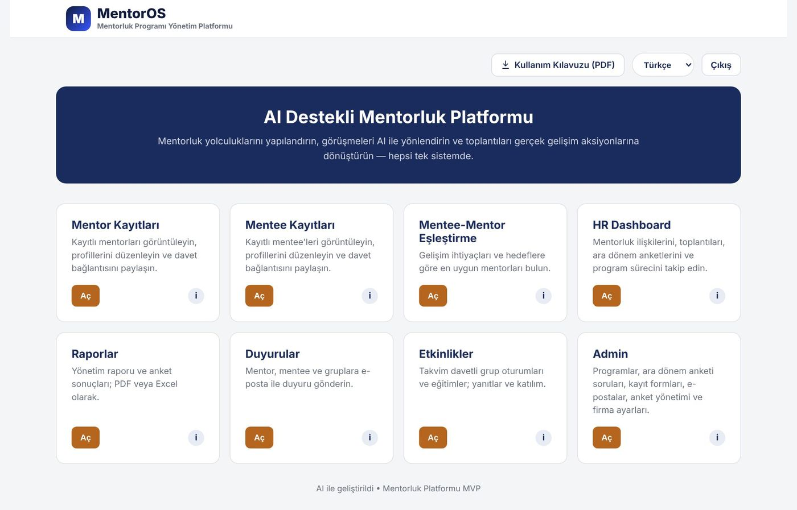
2. Mentor ve mentee kaydı
Kişileri siz girmezsiniz; kendileri bir bağlantıdan kayıt olur.
Mentor Kayıtları'nı açın.
Davet bağlantısını Kopyala ile alıp paylaşın ya da e-posta adreslerini yazıp Gönder'e basın.
Formu dolduran kişi listede görünür; Aç ile profilini düzenleyebilirsiniz.
Mentee'ler için aynısını Mentee Kayıtları'nda yapın.
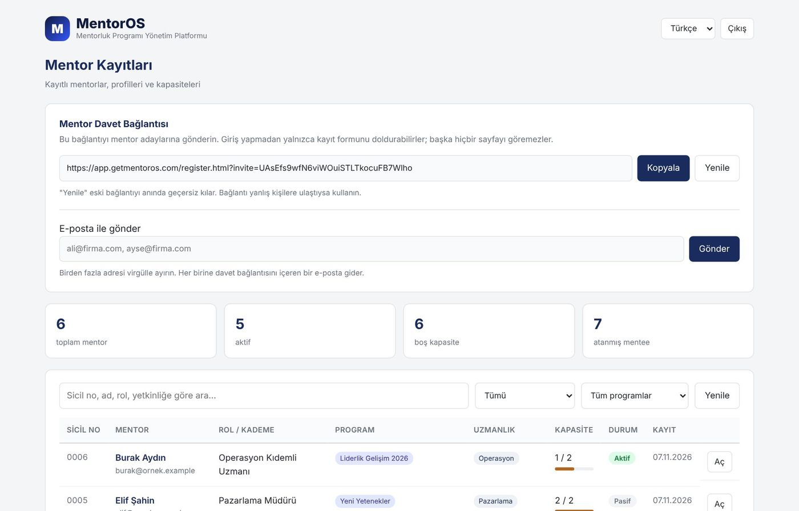
Sicil numarası
Sistem kayıt olan herkese firmanız içinde 0001'den başlayan bir sicil numarası verir; kayıt formunda sicil sorulmaz.
Kişi e-posta adresiyle tanınır: hem mentor hem mentee olan biri tek bir numara alır.
Numara hiç değişmez ve silinen bir kişinin numarası başkasına verilmez.
Aynı e-postayla aynı rolde ikinci kez kayıt olunamaz (mentor olan biri mentee olarak kayıt olabilir).
Ad soyad ya da e-posta değişirse
Kişiyi Aç ile açıp yeni bilgiyi kaydedin. Sistem değişikliği bağlı kayıtlara da işler ve ekranda kısa bir bilgi gösterir:
Ad soyad: eşleşmelerde (tamamlananlar dahil), anketlerde ve etkinliklerde güncellenir (örneğin evlilikle değişen soyadı).
E-posta: aktif eşleşmelerde, bekleyen anketlerde ve yaklaşan etkinliklerde güncellenir; sonraki e-postalar yeni adrese gider.
Sicil numarası ve kişisel bağlantılar aynı kalır.
3. Programlar
Programları Admin → Programlar'da başlangıç ve bitiş tarihiyle oluşturun. Mentor ve mentee'ler birden fazla programda olabilir.
Mentee'yi Mentee Kayıtları'nda açın.
Program kutucuklarından kişinin olacağı programları işaretleyin ve kaydedin.
Bir mentee'nin her programda en fazla bir aktif eşleşmesi olur; farklı programlarda aynı anda eşleşebilir.
Bir programda gruptaysa o programın kutucuğu kilitlidir; önce gruptan çıkarın.
Aktif eşleşmesi olan bir programdan çıkarırken uyarı çıkar; eşleşme o programda devam eder.
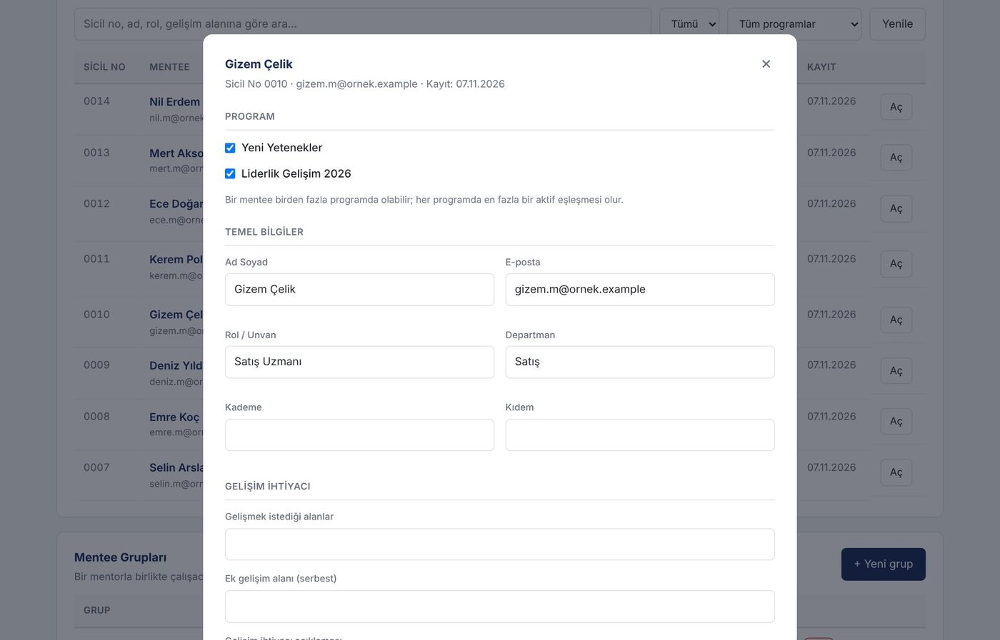
4. Eşleştirme
Mentee-Mentor Eşleştirme'yi açın, programı seçin, sonra mentee'yi (ya da mentee grubunu) seçin.
Eşleşmenin bitiş tarihi programdan gelir; programsız eşleşmede tarihi siz girersiniz.
AI İle Eşleştir: AI uygun mentorları önerir. Manuel Eşleştir: mentoru listeden kendiniz seçersiniz.
Eşleştirince mentor ve mentee için ortak bir çalışma sayfası açılır.
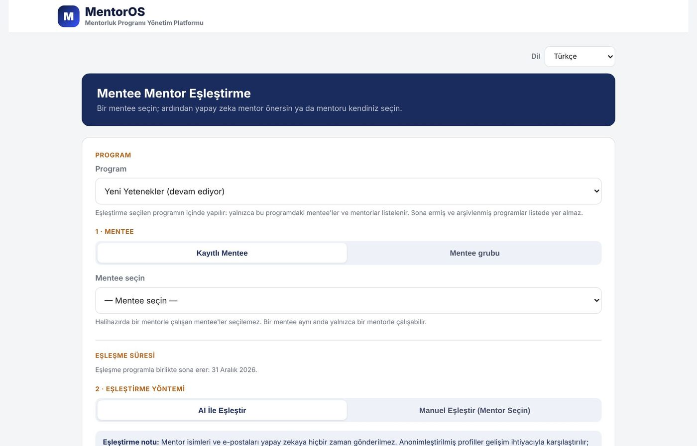
AI eşleştirmede isimler, e-postalar ve sicil numaraları AI'ya hiçbir zaman gönderilmez. Ayrıntılar için AI kullanımı ve kişisel veriler bölümüne bakın.
5. HR Dashboard
Tüm mentorlukları tek yerden takip edersiniz.
Yeni eşleşmede Eşleşme e-postasını gönder'e basın: mentor ve mentee (grupta her üye) kendi kişisel çalışma sayfası bağlantısını alır.
Toplantı Takibi'nde kim ne zaman, ne kadar görüştü görürsünüz (konuşulanlar görünmez).
Program ortasında Ara Dönem Anketi düğmeleriyle mentora, mentee'ye ya da ikisine kısa bir anket gönderin.
Mentorluk biterken Anket Gönder ile kapanış anketini isteyin.
Bekleyen bir anketi tekrar göndermek hatırlatma sayılır; aynı kişiye 24 saatte en fazla bir hatırlatma gider.
Daha önce kurulmuş eşleşmelerde kişisel bağlantıların gitmesi için Eşleşme e-postasını bir kez yeniden gönderin.
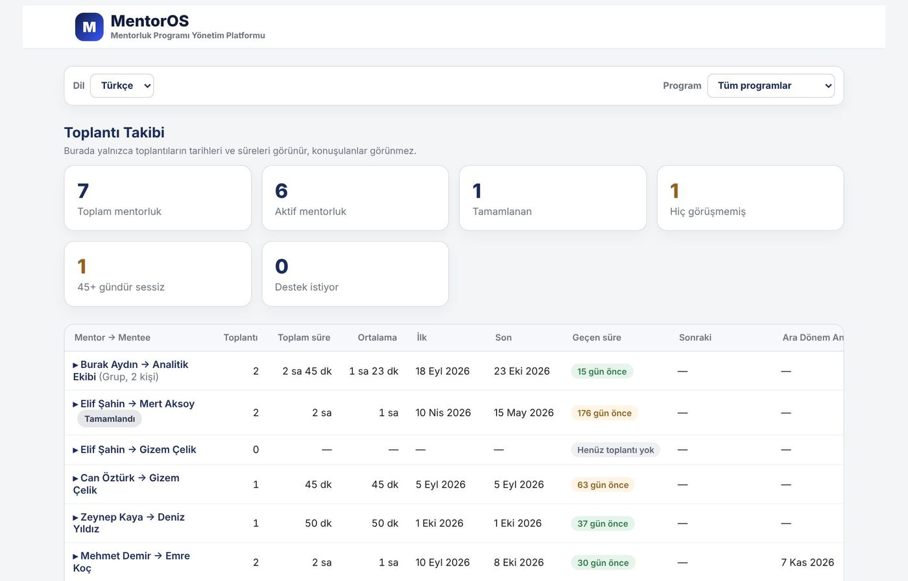
6. Anket Yönetimi
Admin → Anket Yönetimi'nde gönderilen her ara dönem ve kapanış anketini kişi bazında görürsünüz: yanıtladı mı, bekliyor mu, kaç hatırlatma gitti.
Anket türü, program ve duruma göre süzün ya da sicil no / ad ile arayın.
Hatırlatmak istediklerinizi işaretleyip Seçilenlere hatırlat'a ya da Bekleyen herkese hatırlat'a basın.
Hatırlatılamayan satırda nedeni yazar: 24 saat dolmadı, e-posta yok ya da eşleşme aktif değil.
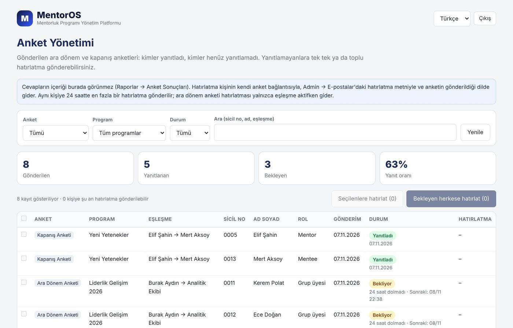
Cevapların içeriği burada görünmez; Raporlar → Anket Sonuçları'ndadır.
7. Duyurular ve Etkinlikler
Duyurular: E-posta yazar gibi konu ve mesajı yazın, alıcıları seçin (mentorlar, mentee'ler, gruplar, programlar ya da istediğiniz adresler), gerekirse dosya ekleyip gönderin. Herkese ayrı e-posta gider; duyuru çalışma sayfalarında da görünür.
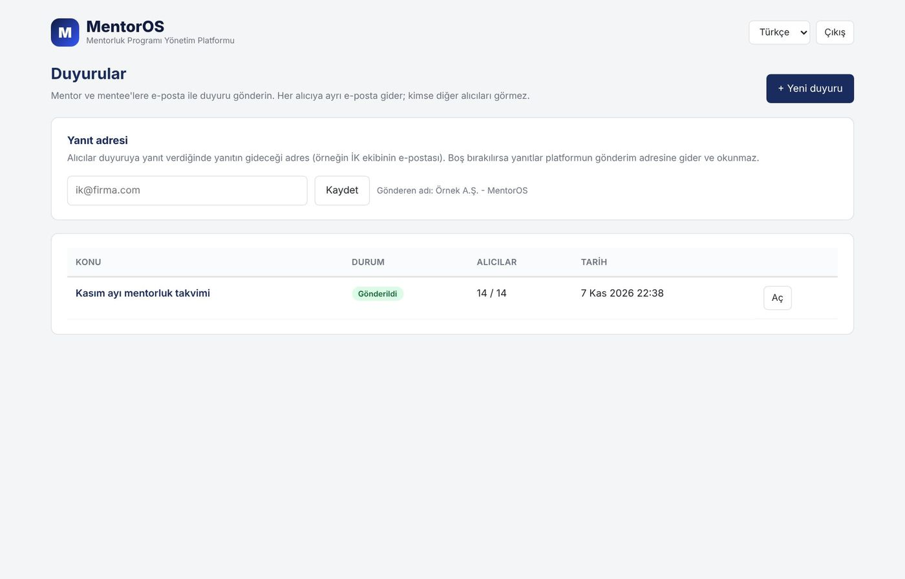
Etkinlikler:
+ Yeni etkinlik ile tarih, saat ve yer ya da online bağlantıyı girin.
Katılımcıları ekleyip davet gönderin; takvim daveti gider ve kişiler kendi bağlantılarından yanıt verir.
Etkinlikten sonra kimin gerçekten katıldığını işaretleyin.
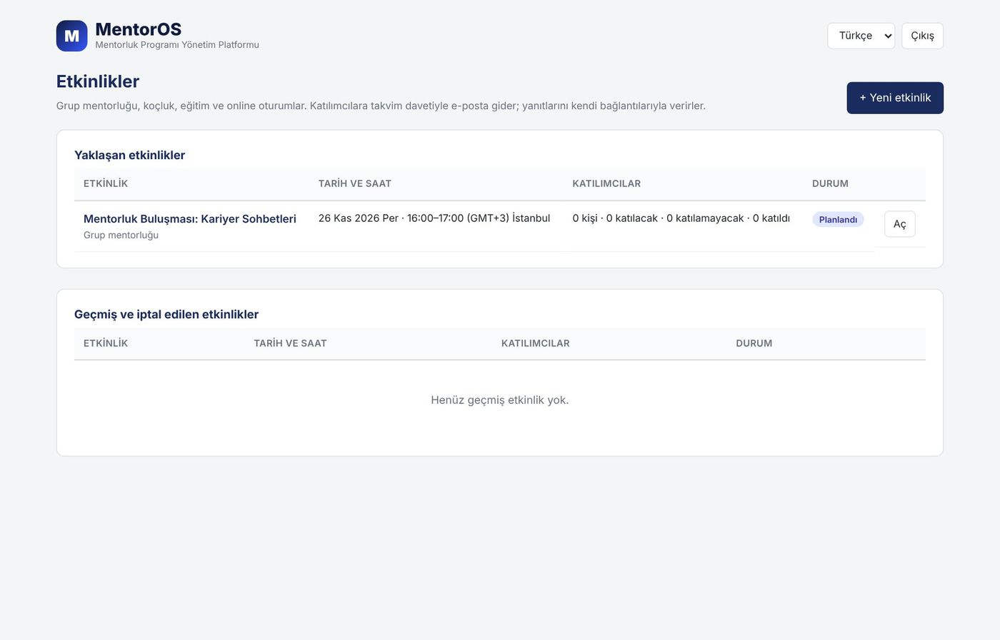
8. Raporlar
Sekmeyi seçin, tarih aralığını (ve gerekirse programı) girip Uygula'ya basın. PDF indir ya da Excel indir ile kaydedin.
Yönetim Raporu: kişi, eşleşme, toplantı ve kapasite sayıları; program, mentor, mentee, eşleşme, grup ve toplantı tabloları.
Anket Sonuçları: ara dönem ve kapanış anketleri. İsimli cevaplar yalnızca ekranda; dosyalarda kişiler “Katılımcı 1, 2…” olur.
Etkinlikler: davet ve katılım bilgileri.
Kişiye Özel Rapor: sicil no ya da ad yazıp kişiyi seçin. Programları (mentor/mentee rolüyle), eşleştiği kişiler, eşleşmeler, grup ve toplantılar ile kişinin ve eşleştiği kişinin anket cevapları gelir. Anket cevapları yalnızca ekranda görünür.
AI Yönetici Özeti: bkz. sonraki bölüm.
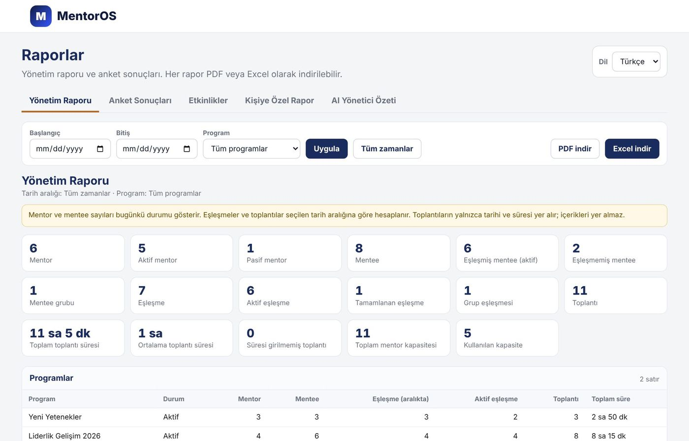
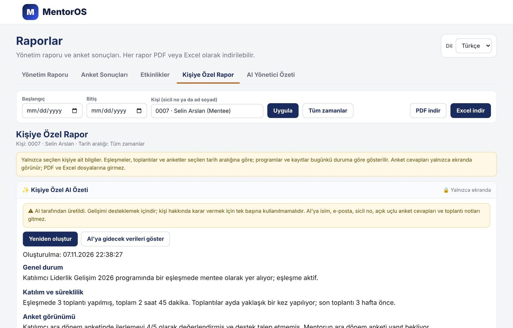
9. AI kullanımı ve kişisel veriler
MentorOS yapay zekâyı (AI) şu yerlerde kullanır: AI İle Eşleştir, çalışma sayfasında gelişim planı taslağı, AI Yönetici Özeti ve Kişiye Özel AI Özeti.
AI'ya hiçbir zaman gitmeyenler
İsim ve soyadı
E-posta ve telefon
Sicil numarası
Açık uçlu anket cevapları
Toplantı notlarının içeriği
AI'ya gidebilenler
Sayılar, oranlar ve tarihler
Program adları
Puan ve seçenek cevapları (ör. 4/5, Evet)
Unvan, departman, yetkinlik ve gelişim ihtiyacı gibi profil bilgileri — içindeki isimler maskelenir
Özetlerde AI'ya gidecek verileri göster ile göndermeden önce neyin gideceğini görebilirsiniz.
Son özet saklanır; sayfayı açmak AI'ya istek göndermez. Yeniden oluştur yeni bir istek gönderir.
AI'nın yazdığı metni sayılarla karşılaştırarak kontrol edin. Kişiye Özel AI Özeti gelişimi desteklemek içindir; kişi hakkında karar vermek için tek başına kullanılmamalıdır.
AI firmanız için kapatılabilir; kapalıyken hiçbir veri AI'ya gitmez ve AI düğmeleri çalışmaz.
AI özetleri yalnızca ekranda gösterilir; bir kişi silinince onun AI özeti de silinir.
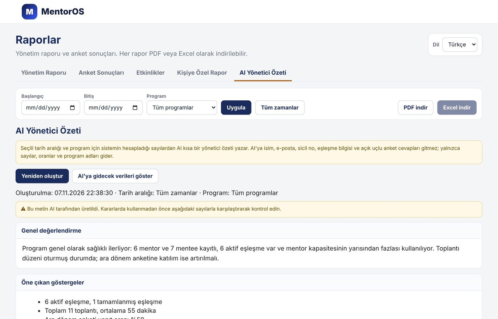
KVKK: Kişisel verilerin, isimler gizlenerek, mentorluk sürecinin değerlendirilmesi amacıyla yapay zekâ ile işlenebileceğinin aydınlatma metninizde yer aldığını hukuk danışmanınızla kontrol etmenizi öneririz.
10. Admin
Ana sayfadaki son kutu. Bunlar genelde bir kez ayarlanır:
Programlar: programlar ve tarihleri.
Ara Dönem Anketi Soruları: ara dönem anketinde sorulacaklar.
Kayıt Formları: formlarda hangi alanların görüneceği ve zorunlu olacağı.
E-postalar: davet, eşleşme/çalışma sayfası, anket ve hatırlatma e-postalarının konu, başlık, metin ve buton yazısı (Türkçe ve İngilizce ayrı). {ad}, {karşı_taraf}, {firma}, {program}, {dönem} gibi değişkenler her kişi için doldurulur; Önizle ile görün, Varsayılana dön ile geri alın.